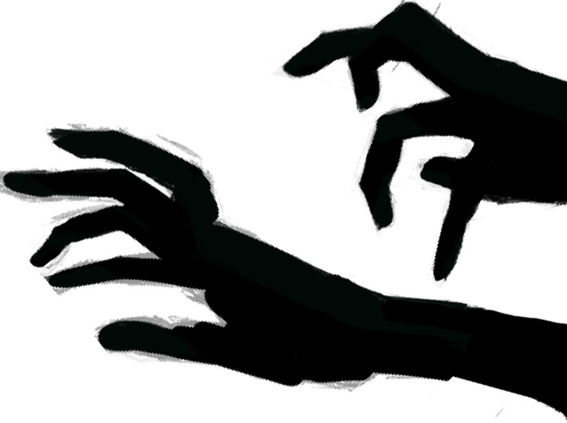

Цифровой 2Д рисунок — вид современного изобразительного искусства, связанный с передачей зрительных образов посредством воспроизведения на экране пикселей.
При этом, создание электронных изображений, осуществляется не путём рендеринга компьютерных моделей, а за счёт использования человеком компьютерных имитаций традицион-ных инструментов художника, что позволяет также использовать полученные знания в аналоговом(традиционном) рисунке.
